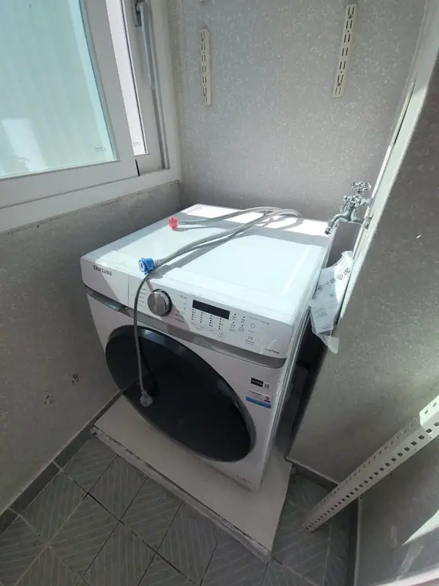
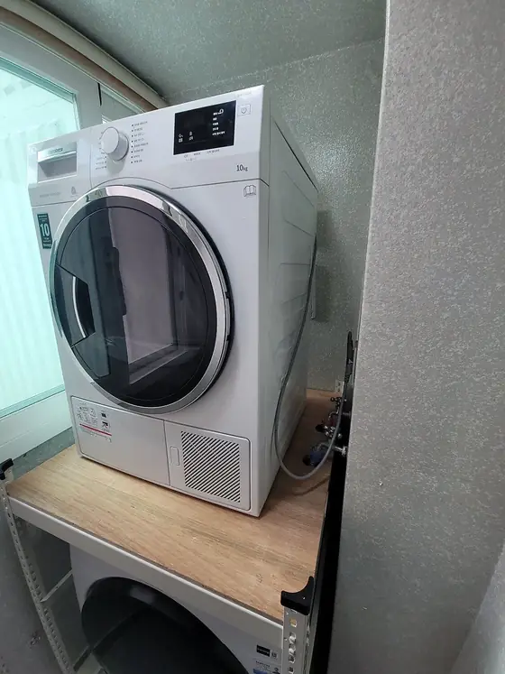

BEFOREAFTER성남 분당 세탁기 위 건조기 앵글 선반 설치
- 작업 전
- 작업 전에는 세탁기만 세탁실 안쪽에 놓여 있었습니다. 사진을 보면 세탁기 위쪽으로는 상당한 높이의 빈 공간이 남아 있습니다.
- 작업 내용
- 세탁실 설치 공간 확인 → 세탁기와 건조기 크기 측정 → 건조기 랙 조립 → 상판 설치 및 수평 확인
- 작업 완료
- 기존에는 세탁기와 건조기가 서로 다른 위치에 있어 세탁이 끝난 빨래를 건조기까지 따로 옮겨야 했습니다.
- 마무리
- 좁은 세탁실에서는 바닥 면적을 넓히기 어려운 만큼 위쪽 공간을 어떻게 활용하느냐가 전체적인 사용 편의에 큰 차이를 만들 수 있습니다.